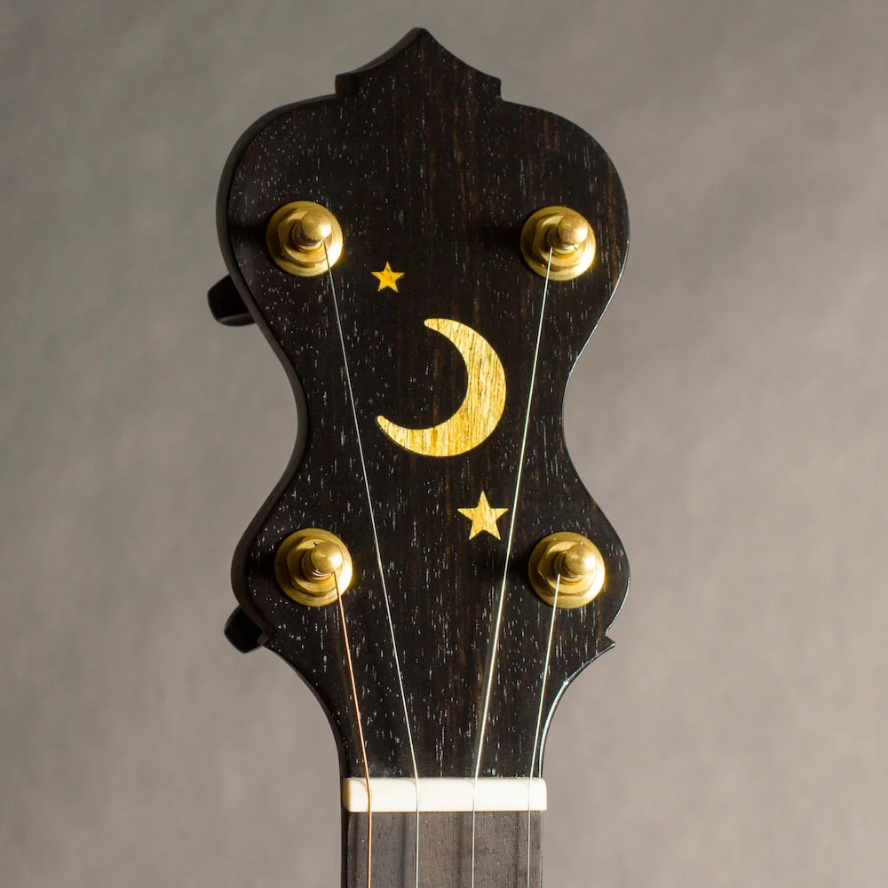

A one-off instrument developed in conversation with you — not a model, but a process.
Bespoke builds are different from the Tidal and Driftwood. There is no template, no fixed spec sheet, and no standard version. Each instrument starts from a conversation about what the player needs — playing style, tonal goals, physical preferences, and any ideas about materials or ornamentation that matter to them.
From there, the design is developed collaboratively. Rim size, scale length, wood selection, hardware, inlay, binding, and construction details are all open. Some bespoke builds are close to the standard models but with a specific wood or finish. Others explore construction approaches that wouldn't fit a production instrument. The scope is defined by the project.
Because of the design work involved, bespoke builds are accepted on a limited basis. If you have something specific in mind, reach out and we can talk through whether it's a fit.
Pricing depends on the scope of the build. Contact to discuss.
